[TOC]
1.说明计算机系统的层次结构。
P7
常见的五级计算机系统的层次结构
其中软硬件交接界面为操作系统机器和机器语言机器之间
- 硬件：传统机器M1，微程序机器M0
- 软件：操作系统级及以上各级虚拟机
翻译器（编译器）将高级语言程序翻译为机器语言程序，而机器语言由操作系统和微程序解释后由硬件执行
2.说明冯诺依曼体系结构的特点。
P8
五大部件：运算器，存储器，控制器，输入设备和输出设备
- 指令和数据用二进制表示，并以同等地位存放于存储器，按地址寻访
指令由操作码和地址吗组成，顺序存放于存储器所以通常顺序执行
- 操作码：操作性质
- 地址码：位置
运算器为中心，但现代计算机以存储器为中心
冯·诺依曼机的基本工作方式是：控制流驱动方式

3.什么是机器字长、指令字长、存储字长?
- P17
- 机器字长为CPU一次能处理数据的位数，与寄存器位数有关
- 指令字长：P304
- 指令字长为计算机指令所占用的位数，指令字长取决于操作码的长度、操作码地址的长度和操作码地址的个数。
- 指令流通常是（主存流向控制器）
- 存储字长通常指一个存储单元存储二进制代码的位数，MDR（Memory Data Registe) 的位数，指数据寄存器中的位数，
4.系统总线包括哪三类？起到什么作用？
- P43
- 总线是连接多个部件的信息传输线，是各部件共享的传输介质
- 系统总线为总线的一种，根据传输信息的不同分为三种
- 数据总线：传输各功能部件之间的数据信息，双向传输，位数与机器字长，存储字长有关，同时位数成为宽度
- 地址总线：数据地址或设备地址，指明CPU访问的地址，由CPU输出，单向传输，位数与存储单元个数有关
- 控制总线：发出控制信号，单向或者双向，对于CPU有输入和输出
5.总线判优控制是解决什么问题的？总的来说可以分为哪两种方式？
- P57
- 若多个主设备同时要使用总线时，由总线判优控制按一定优先级顺序确定哪个主设备能使用总线
- 总线判优控制解决多个部件同时申请总线时的总线使用权分配问题
- 集中式和分布式
6.集中式总线控制优先权仲裁方式有哪三种？各有什么特点？
P57
链式查询方式
- 线路结构简单，容易扩充设备
- 对电路故障敏感，优先级固定，优先级别低的设备难获得请求
计数器定时查询
- 优先级设置灵活，对电路故障不那么敏感
- 增加了控制线，n个设备大约需要⌈ log_2n ⌉+2条控制线，控制较复杂
- 独立请求方式
- 响应速度快，优先次序控制灵活
- 控制线多，设备 n 个，则需要 2n+1 条控制线，其中的 1 是指反馈线，控制逻辑复杂

7.简述总线周期的4个阶段。
P59
总线周期：完成一次总线操作的时间
申请分配：主模板申请，经总线仲裁机构决定下一传输周期的总线使用权授予某一申请者。
寻址：取得了使用权的主模块通过总线发出本次要访问的从模块（或从设备）的地址及有关命令，启动参与本次传输的从模块。
传数：主模块和从模块进行数据交换，数据由源模块发出，经数据总线流入目的模块。
结束：撤除主模板信息，让出总线使用权
8.总线通信控制是解决什么问题的？总的来说有哪几种控制方式？各自的特点是什么？
P59
主要解决通信双方如何获知传输开始和结束，协调配合的问题
总线传输周期：连接在总线上的两个部件完成一次完整且可靠的信息传输时间
同步通信：
统一时标（通常由CPU的总线控制部件发出），一般由系统时钟决定
规定明确统一，模块间的配合简单一致
强制性同步，影响效率，设计局限性，不灵活
用于总线长度短，各部件存取时间比较一致
数据传输率与传输周期和数据位数有关
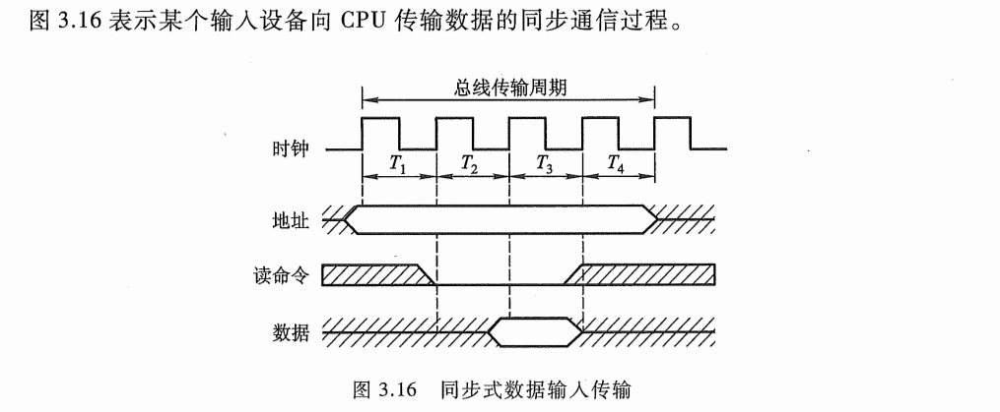
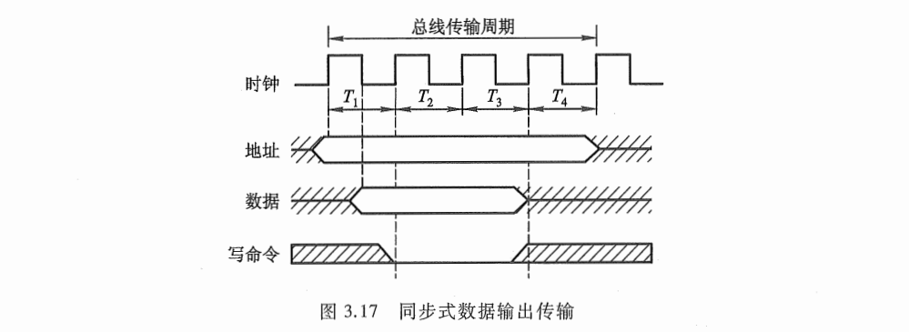
例题
异步通信：
允许各模板速度不一致，采用应答方式（握手方式）
分为不互锁，半互锁，全互锁
半同步通信：
地址，命令，数据信号发出时间参照系统时钟某个前沿，接收方采用系统时钟后沿时刻判断识别
允许不同速度各模板工作，并通过（WAIT)响应信号线或采用插入时钟（等待）周期协调
用于系统工作速度不高但又包含速度差异较大的各类设备组成的简单系统
控制比异步简单，可靠性较高，同步结构较简单
系统时钟频率低，速度较慢
分离式通信：
- 各模板需要申请
- 限定时间传送信息，采用同步方式，不等待回答
- 准备数据不占用总线
- 控制复杂
9.串行传输和并行传输有何区别？各适用于什么场合？
- P??
串行传输：
- 一条数据线，一位一位依次传输，数据的各个比特（bit）是按照时间序列逐个发送和接收的
- 传输效率低
- 适用于长距离，减少衰减
- 通常用于计算机与外部设备（如打印机、鼠标、键盘）的通信，以及远距离通信（如网络连接、无线通信）。
并行传输：
- 数据线多条，成组传输
- 传输效率高
- 适用于短距离通信，因为随着线路长度的增加，信号同步和干扰问题会变得更严重。
- 并行传输适用于需要快速传输大量数据的场合，如内存模块、主板内部的总线、打印机的打印头与控制电路之间的数据传输。
10.试比较RAM和ROM。
- P69
RAM（随机存取存储器）:
- 随机访存，存储时间与物理位置无关，可读可写
- 主存采用，主要用于存储临时数据和程序，是CPU执行程序时的工作空间。它允许快速访问和频繁的数据更新。
- 速度快于ROM，但成本较高且有易失性
ROM（只读存储器）：
- 存储固件或系统软件，一般不允许用户修改
- 用于存储不需要频繁更改的系统级软件，如BIOS或固件，这些软件在系统启动时加载到RAM中。
- 速度较慢，但成本相对较低
11.从实现技术的角度，试比较SRAM和DRAM。
- P76
静态 RAM (Static RAM, SRAM)：
- 用触发器工作原理存储信息，断电易失去信息，但不需要刷新
- 由 MOS 管组成基本单元电路
- 速度快，但成本较高
动态 RAM (Dynamic RAM, DRAM)：
- 电容存储电荷的原理寄存信息，需要刷新
- 基本单元电路有三管式和单管式两种
- 集成度高，相同价格容量大于SRAM，但是速度较慢，且功耗较高
12.存储芯片内的地址译码方式有几种？各自特点及应用场合？
- P75
线选法：
- 一根字选择线直接选中一个存储单元的各位（如一个字节）
- 结构简单，用于容量不大的存储芯片
- 当容量变大时，需要的地址线指数级增多
重合法：
- 又称为二维地址译码
- 通常由行地址译码器（X译码器）和列地址译码器（Y译码器）组成
- 行和列的交汇处共同锁定一个单元，适用于大容量存储芯片
- 重合法可以提高存储器的集成度和存储密度
- 结构较复杂
13.什么是动态RAM的刷新？刷新有几种方式？简要说明之。
- P85
- 刷新的过程实质上是先将原存信息读出，再由刷新放大器形成原信息并重新写入的再生过程
- 通常有三种方式刷新：集中刷新、分散刷新和异步刷新。
- 集中刷新：
- 规定刷新周期，集中刷新全部存储单元
- 存在“死区”，无法进行读写操作
- 分散刷新：
- 指对每行存储单元的刷新分散到每个存取周期内完成
- 不存在停止读写操作的死时间，但存取周期长，系统速度降低
- 异步刷新：
- 结合上述两种方法
- 缩短了‘死区’时间，又充分利用最大刷新间隔为2ms

- 如果将动态 RAM 的刷新安排在 CPU 对指令的译码阶段，由于这个阶段 CPU 不访问存储器，所以这种方案既克服了分散刷新需独占 0.5 µs 用于刷新，使存取周期加长且降低系统速度 的缺点，又不会出现集中刷新的访存“死区”问题，从根本上提高了整机的工作效率。
14.存储容量扩展有哪几种方法？
- P91
- 通常有位扩展和字扩展，字位扩展
- 位扩展：
- 增加存储字长
- 字扩展：
- 增加存储器字的数量

- 字、位扩展：
- 指既增加存储字的数量，又增加存储字长

例题！！！P94
15.使用汉明码进行校验时，需要增加k位检测位，且k位的检测位和n位的待检测二进制代码位之间要满足什么关系？为什么？
- P100
- 2^k ≥ n+k+1
16.已知收到的海明码为0100111（按配偶原则配置），试问欲传送的信息是什么？
- P1 = 1⊕3⊕5⊕7 = 0
- P2 = 2⊕3⊕6⊕7 = 1
- P4 = 4⊕5⊕6⊕7 = 1
- P4P2P1 = 110
- (110)2=6->第六位出错，纠正为 0100101，故要求传送的信息为 0101
17.什么是多体并行存储器？有哪两种存储体编址方式，各自有什么特点？
P104
多体模块组成的存储器
每个模块有相同容量和存取速度
各模块有独立的的地址寄存器 (MAR) 、数据寄存器 (MDR) 、地址译码、驱动电路和读／写电路
并行工作，交叉工作
两种存储体编址方式：高位交叉编址和地位交叉编址
高位交叉：
- 高位地址表示体位，低位地址为体内地址
- 顺序存储
- 低位交叉：
- 低位地址表示体位，高位地址为体内地址
- 模M编址
例题：
18.Cache、主存和辅存构成的三级存储系统分别的目的是什么？设计依据是？
- P109
- Cache-主存层次：
- 解决 CPU 和主存速度不匹配的问题
- 程序访问的局部性原理
- 缓存的速度比主存的速度高
- 主存-辅存层次：
- 解决存储系统的容量问题
- 辅存的速度比主存的速度低，而且不能和 CPU 直接交换信息，但它的容量比主存大得多，可以存放大量暂时未使用得信息。
- 当 CPU 需要用到这些信息时，再将辅存的内容调入主存，供 CPU 直接访问。
- 主存和辅存之间的数据调用是由硬件和操作系统共同完成的。
19.请简述Cache的基本工作原理。
P110
任何时刻都有一些主存块处在缓存块中
需要的字已经在缓存中，即可直接访问 Cache（命中）
需的字不在 Cache 内，此时需将该字所在的主存整个字块一次调入 Cache 中（未命中)
每个缓存块需设一个标记 ，表示当前存放的是哪一个主存块，该标记的内容相当于主存块的编号。
关于命中率：
- 命中率h=Nc/(Nc+Nm)，或者 Nc/N
- Nc 为访问 Cache 的总命中次数，Nm为访问主存的总次数，N为访问总次数
- 例题：
- 关于Cache容量：
20.试比较主存-Cache管理中三种地址映射的方法，并分别给出在三种地址映射下，主存地址划分。
- P117
- 由主存地址映射到 Cache 地址称为地址映射。
直接映射（固定的映射关系）、全相联映射（灵活性大的映射关系）、组相联映射（上述两种映射的折中）。
直接映射：
- 每个主存块只与一个缓存块相对应
- 实现简单，利用主存地址某些位直接判断
- 但不够灵活，如果重复访问对应同一缓存位置的不同主存块，就要不停替换，从而降低了命中率
- 全相联映射：
- 允许主存中每一字块映射到 Cache 中的任何一块位置上。
- 方式灵活，命中率较高，并缩小了块冲突率
- 逻辑电路多，成本高
- 组相联映射：
- 直接映射和全相联映射的一种折中。把 Cache 分成 Q 组，每组 R 块
- 组相联映射的性能及其复杂性介于直接映射和全相联映射两者之间
例题：
- 直接映射
各种映射
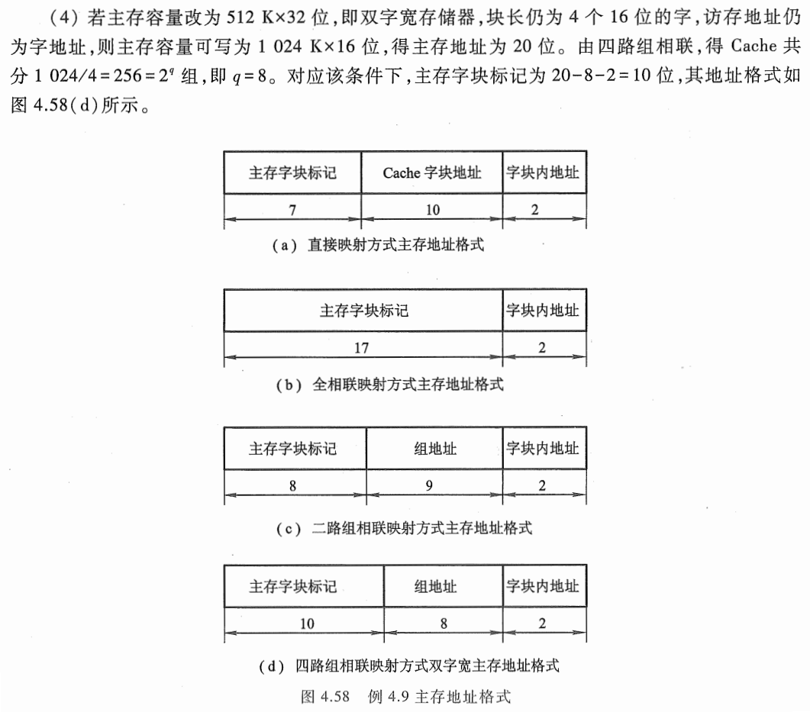
21.Cache-主存间的替换策略有哪些，请简述。
- P122
- 当新的主存块需要调入 Cache 并且它的可用空间位置又被占满时，需要替换掉 Cache 的数据，这就产生了替换策略（算法）问题
常用的替换算法有先进先出算法、近期最少使用算法和随机法。
先进先出 (First-In-First-Out, FIFO) 算法
- 选择最早调入的Cache的字块进行替换
- 容易实现，开销小
- 但没有根据访存的局部性原理，故不能提高 Cache 的命中率
- 近期最少使用 (Least Recently Used, LRU) 算法
- 比较好地利用访存局部性原理，替换出近期用得最少的字块
- 需要记录Cache中各字块使用情况
- 比较复杂，一般采用简化的方法，只记录每个块最近一次使用的时间
- LRU 算法的平均命中率比 FIFO 的高
- 随机法
- 随机确定被替换的块
- 采用一个随机数产生器
22.发生主存写请求时，如何保证Cache和主存的一致性？
- P113
- 对于写操作，对 Cache 块内写入的信息，必须与被映射的主存块内的信息完全一 致
- 写直达法 (Write-through) ，又称为存直达法（ Store-through)
- 写操作时数据既写入 Cache 又写入主存
- 随时保证主存和 Cache 的数据始终一致，但增加了访存次数
- 写操作时间就是访问主存的时间，读操作时不涉及对主存的写操作，更新策略比较容易实现
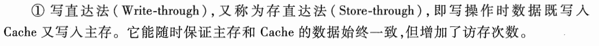
- 写回法 (Write-back) ，又称为拷回法 (Copy-back)
- 写操作时只把数据写入 Cache 而不 写入主存，但当 Cache 数据被替换出去时才写回主存
- 为了识别 Cache 中的数据是否与主存一致， Cache 中的每一块要增设一个标志位
- 写操作时间就是访问 Cache 的时间，读操作 Cache 失效发生数据替换时，被替换的块需写回主存，增加了 Cache 的复杂性
- 关于两者的对比
23.影响Cache-主存层平均访问时间的因素有哪些？如果降低平均访存时间，可以怎么办？
P??
缓存命中率
- 缓存未命中的访问时间
- 缓存结构
- 缓存替换策略
- 缓存块大小
- 写策略
- 降低平均访存时间：
- 增加缓存容量
- 提高缓存的相联度
- 优化缓存替换策略
- 调整缓存块大小
- 使用预取技术
- 多级缓存设计
- 缓存行（Cacheline）对齐
- 合理利用写策略
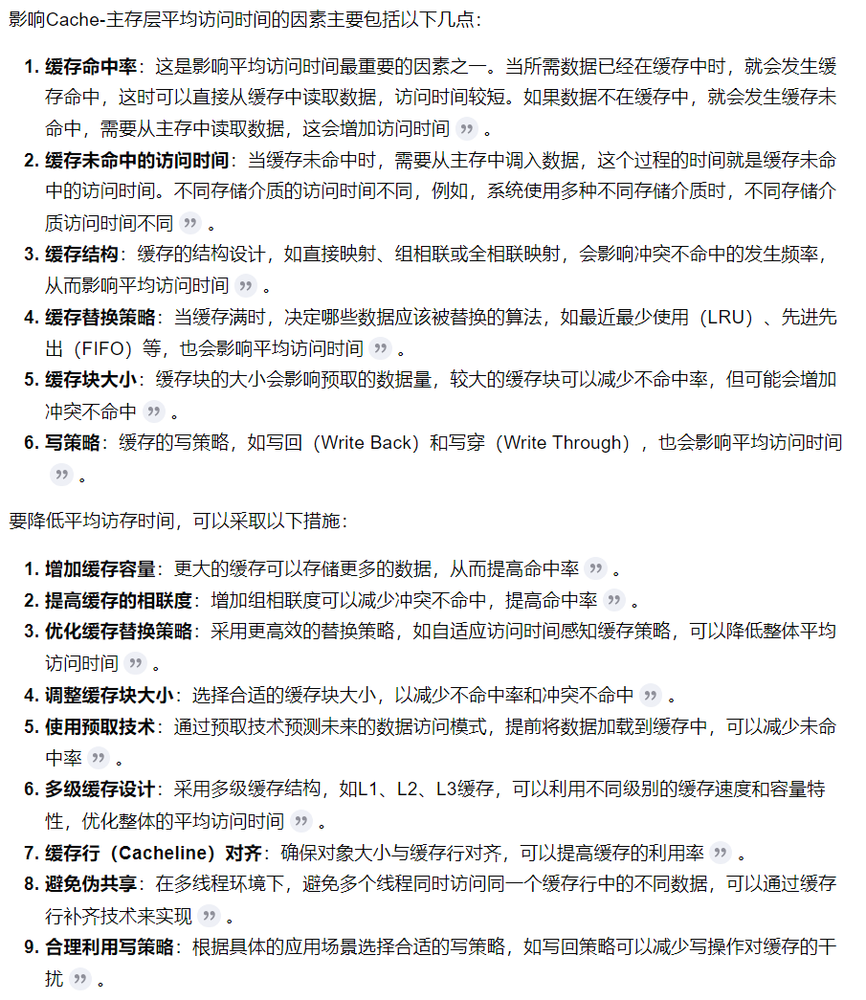
24.I/O地址码的编制方式有哪两种？
- P159
- 通常将 I/O设备码看作地址码
- 对 I/O地址码的编址可采用两种方式：统一编码和不统一编码
统一编址
- 将I/O地址看作存储器地址的一部分
- 对I/O设备的访问，所用指令与访存指令相似
- 占用了存储空间，减少了主存容量，无需专用的I/O指令
不统一编址
- I/O地址和存储器地址分开
- 访问I/O有专用的指令
- 不占用存储空间，不影响主存容量，需专用的I/O指令
25.I/O与主机交换信息有哪几种控制方式？各有何特点？
- P161
- I/O 设备与主机交换信息时，共有5种控制方式：程序查询方式、程序中断方式、直接存储器存取方式 (DMA) 、I/0 通道方式、 I/0 处理机方式。
- 程序查询方式
- CPU不断查询I/O设备是否已做好准备，从而控制I/O设备与主机交换信息
- 求 I/O 接口内设置一个能反映 I/O 设备是否准备就绪的状态标记
- 主机和I/O串行工作
- CPU反复查询过程中停止工作，效率低
- CPU从设备取出数据时停止工作，CPU和I/O串行工作
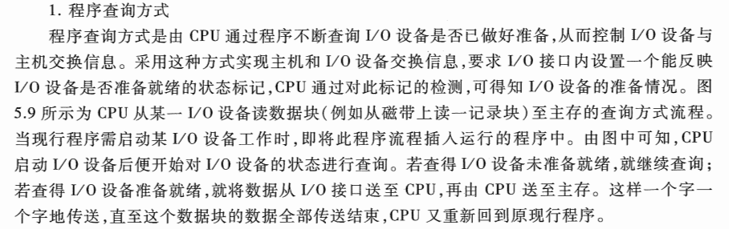
- 工作示意图：
程序中断查询：
CPU启动I/O设备后不查询设备是否准备就绪，继续执行自身程序
I/O准备就绪后发送中断请求
CPU响应I/O请求后，中断现行程序，转至中断服务程序，占用了CPU内部的一些寄存器
处理完信息交换，回到原程序断点处，继续执行
CPU向I/O 设备发读指令后，仍在处理其他事情（如继续在算题），消除了“踏步”行为
CPU 执行程序与 I/0 设备做准备是同时进行的，充分利用了CPU资源
对于程序中断方式，硬件需要增加相应电路，软件方面需要编制中断服务程序
工作示意图：
DMA方式：
- I/O设备与主存直接交换信息，而不占用CPU
- 主存与 I/O 设备之间有一条数据通路
- 若出现 DMA 和CPU 同时访问主存， CPU 总是将总线占有权让给 DMA, 通常把 DMA 的这种占有称为窃取或挪用，一般为一个存取周期，又称为窃取周期或挪用周期
- 在 DMA 窃取存取周期时， CPU 尚能继续做内部操作（如乘法运算），只是让出总线使用权
- 采用 DMA 方式时，也需要增加必要的 DMA 接口电路

工作示意图：
I/O通道
- 通道是用来负责管理I/O设备以及实现主存与 I/O 设备之间交换信息的部件，可以视为一 种具有特殊功能的处理器。
- 通道有专用的通道指令，能独立地执行用通道指令所编写的输入输出程序，但不是一个完全独立的处理器
- 依据 CPU 的 I/O 指令进行启动、停止或改变工作状 态，是从属于 CPU 的一个专用处理器
- 依赖通道管理的 I/O 设备在与主机交换信息时，CPU 不直接参与管理，故提高了 CPU 的资源利用率。
- I/O处理机
- I/O 处理机又称为外围处理机(Per ipheral Processor) ，它基本独立于主机工作，既可完成 I/O 通道要完成的 I/O 控制，又可完成码制变换，格式处理，数据块检错、纠错等操作
- 具有 I/O处理机的输入输出系统与 CPU工作的并行性更高，这说明 I/0 系统对主机来说具有更大的独立性。
26.I/O接口有什么作用。
- P185
- 接口可以看作两个系统或两个部件之间的交接部分，它既可以是两种硬设备之间的连接电路，也可以是两个软件之间的共同逻辑边界
- I/O接口通常是指主机与 I/O 设备之间设置的一个硬件电路及其相应的软件控制。
- 不同的 I/O 设备都有其相应的设备控制器，而它们往往都是通过 I/O 接口与主机取得联系的。
- 一台机器通常配有多台 I/O 设备，它们各自有其设备号（地址），通过接口可实现I/O设备的选择。
- I/O 设备种类繁多，速度不一，与 CPU 速度相差可能很大，通过接口可实现数据缓冲，达到速度匹配。
- 有些 I/O 设备可能串行传送数据，而 CPU 一般为并行传送，通过接口可实现数据串－并格式的转换
- I/O 设备的输入输出电平可能与 CPU 的输入输出电平不同，通过接口可实现电平转换。
- CPU 启动 I/O 设备工作，要向 I/O 设备发各种控制信号，通过接口可传送控制命令。
I/O 设备需将其工作状态（如“忙＂”就绪”“错误”“中断请求”等）及时向 CPU 报告，通过接口可监视设备的工作状态，并可保存状态信息，供 CPU 查询。
注意，接口和端口是两个不同的概念
- 端口是指接口电路中的一 些寄存器，这些寄存器分别用来存放数据信息、控制信息和状态信息，相应的端口分别称为数据端口、控制端口和状态端口。若干个端口加上相应的控制逻辑才能组成接口。
- 接口的分类：P188
- 按数据传送方式分类，有并行接口（一个字节或一个字的所有位同时传送和串行接口（一位一位传送）两类。
- 按功能选择的灵活性分类，有可编程接口和不可编程接口两种
- 按通用性分类有通用接口和专用接口
- 按数据传送的控制方式分类，有程序型接口和 DMA 型接口
27.程序查询方式和程序中断方式都由程序实现外围设备的输入输出，它们有何不同？
- P189
- 程序查询方式的核心问题在于每时每刻需不断查询 I/O设备是否准备就绪。
- 程序查询方式是用户在程序中安排一段输入输出程序，它由 I/O 指令、测试指令和转移指令等组成。
- CPU 一旦启动 I/O 后，就进入这段程序，时刻查询 I/O 准备的情况，若未准备就绪就踏步等待；若准备就绪就实现传送。在输入输出的全部过程中，CPU 停止自身的操作。
计算机在执行程序的过程中，当出现异常情况或特殊请求时，计算机停止现行程序的运行， 转向对这些异常情况或特殊请求的处理，处理结束后再返回到现行程序的间断处，继续执行原程序，这就是“中断＂
程序中断方式虽也要用程序实现外部设备的输入、输出，但它只是以中断服务程序的形式插入到用户现行程序中。即 CPU 启动 I/O 后，继续自身的工作，不必查询 I/O 的状态。而 I/O 被启动后，便进入自身的准备阶段，当其准备就绪时，向 CPU 提出中断请求，此时若满足条件，CPU 暂停现行程序，转入该设备的中断服务程序，在服务程序中实现数据的传送。
28.以I/O设备的中断处理过程为例，说明一次程序中断的全过程。
- P198
- 由CPU发启动 I/O 设备指令，将接口中的 B 置“1”，D 置“0”
- 接口启动输入设备开始工作
- 输入设备将数据送入数据缓冲寄存器
- 输入设备向接口发出“设备工作结束”信号，将 D 置为“1”，B 置为“0”，标志设备准备就绪
- 当设备准备就绪(D=1)，且本设备未被屏蔽(MASK=O)时，在指令执行阶段的结束时刻，由 CPU 发出中断查询信号
- 设备中断请求触发器 INTR 被置为“1”'，标志设备向 CPU 提出中断请求。与此同时，INTR 送至排队器，进行中断判优
- 若 CPU 允许中断(EINT=1)，设备又被排队选中，即进入中断相应阶段，由中断响应信号 INTA 将排队器输出送至编码器形成向量地址
- 向量地址送至 PC，作为下一条指令的地址
- 由于向量地址中存放的是一条无条件转移指令，故这条指令执行结束后即无条件转至该设备的服务程序入口地址，开始执行中断服务程序，进入中断服务阶段，通过输入指令将数据缓冲寄存器的输入数据送至 CPU 的通用寄存器，再存入主存相关单元
- 中断服务程序的最后一条指令是中断返回指令，当其执行结束后，即中断返回至原程序的断点处。至此，一个完整的程序中断处理过程即告结束
- 综上所述，可将一次中断处理过程简单地归纳为中断请求、中断判优、中断响应、中断服务和 中断返回 5个阶段。
- 其中中断服务程序分为四大部分：保护现场、中断服务、恢复现场、中断返回
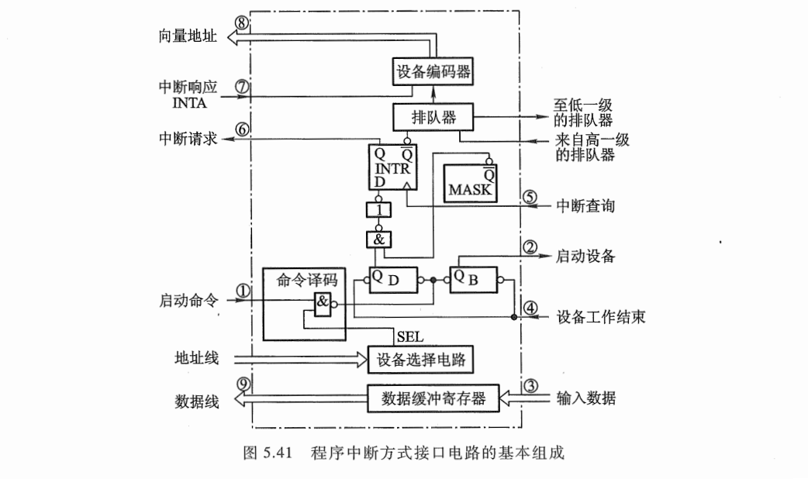
29.在DMA方式中有没有中断请求，为什么？DMA接口电路中应设置哪些硬件。
- P200
- DMA有中断请求，只是数据不通过CPU。DMA控制器在传送完所有字节时，通过中断请求线发出中断信号。CPU在接收到中断信号后，转入中断处理程序进行后续处理。
- 必须注意，这里的中断与 5.5 节介绍的 I/O 程序中断方式的技术相同，但中断的目的不同，前面是为了数据的输入或输出，而这里是为了报告一批数据传送结束。它们是 I/O 系统中不同的中断事件。
硬件：P204
补充DMA接口功能：
- 申请传送
- 处理总线控制权转交
- 管理总线
- 修正数据地址和地址长度
- 给出操作完成信号
主存地址寄存器 (AR):
- AR用于存放主存中需要交换数据的地址。
- 传送数据前，将数据在主存中的首地址送到AR
- 传送过程中，每交换一次数据，AR内地址加一，知道一批数据传送完
字计数器 (WC)：
- WC用于记录传送数据的总字数，通常以交换字数的补码值预置
- 传送过程中，每传送一个字，WC加一，直到WC为0（最高位产生进位），表示传送完毕
- 最后DMA发送中断请求信号
数据缓冲寄存器 (BR)
- BR 用于暂存每次传送的数据
DMA 控制逻辑
- DMA 控制逻辑负责管理 DMA 的传送过程，由控制电路、时序电路及命令状态控制寄存器等组成。
- 设备准备好数据字，向DMA接口提出申请（DREQ），DMA 控制逻辑向CPU发出总线使用权的请求信号 (HRQ)
- DMA 控制逻辑收到CPU响应信号HLDA,DMA 控制逻辑负责管理DMA传送全过程
中断机构
- 当字计数器溢出（全 “0”) 时，表示一批数据交换完毕，由＂溢出信号“通过中断机构向 CPU 提出中断请求，请求 CPU进行DMA 操作的后处理。
设备地址寄存器 (DAR)
- DAR 存放 I/O 设备的设备码或表示设备信息存储区的寻址信息
30.DMA方式中的中断请求和程序中断中的中断请求有何区别？
- P208
- 从数据传送看，程序中断方式靠程序传送，DMA 方式靠硬件传送
- 从 CPU 响应时间看，程序中断方式是在一条指令执行结束时响应，而 DMA 方式可在指令周期内的任一存取周期结束时响应。
- 程序中断方式有处理异常事件的能力，而 DMA 方式没有这种能力，主要用于大批数据的传送，
- 程序中断方式需要中断现行程序，故需保护现场；DMA 方式不中断现行程序，无须保护现场
- DMA 的优先级比程序中断的优先级高
31.DMA和主存交换数据时有哪三种方法？分别简述。
P201
DMA 方式中，由于 DMA 接口与 CPU 共享主存，这就有可能出现两者争用主存的冲突。 为了有效地分时使用主存，通常 DMA 与主存交换数据时采用如下三种方法：停止CPU访问主存、周期挪用（周期窃取）、交替访问
停止CPU访问主存方式
- 传送数据时，DMA向CPU发一个停止信号，要求CPU放弃总线控制
- 控制简单，，适用千数据传输率很高的 I/O设备实现成组数据的传送
- 缺点是 DMA 接口在访问主存时， CPU 基本上处于不工作状态或保持原状态。
周期挪用（周期窃取）方式
- DMA请求时，I/O设备挪用或窃取总线占用权一个或几个主存周期，无请求，CPU继续访存
- 与CPU 暂停访存的方式相比，这种方式既实现了 I/O 传送，又较好地发挥了主存与 CPU 效率，是一种广泛采用的方法。
- 应该指出， I/O设备每挪用一个主存周期都要申请总线控制权、建立总线控制权和归还总线控制权。
DMA 与CPU 交替访问方式
- 这种方法适合千 CPU 的工作周期比主存存取周期长的情况。
- 那么可将一个 CPU 周期分为 C1和C2两个分周期，其中 C1专供 DMA 访存，C2专供 CPU 访存
- 不需要总线使用权的申请、建立和归还过程，总线使用权是通过C1和 C2 分别控制的
- CPU 既不停止主程序的运行也不进入等待状态，就完成了 DMA 的数据传送。但相应的硬件逻辑变得更为复杂。
32.简述DMA的工作过程。
- P205
- DMA 的数据传送过程分为预处理、数据传送和后处理 3个阶段
- 预处理：CPU预置信息，由 CPU 执行几条输入输出指令完成，即程序的初始化阶段。之后CPU继续执行原来程序。
- 给DMA控制逻辑指明数据传送方向是输入（写主存）还是输出（读主存）
- 向DAR输入设备号，启动设备
- 向AR送入交换数据的主存起始地址
- 对WC赋予数据个数

- 预处理完后，待 I/O 设备得到主存总线的控制权后，数据的传送便由该 DMA 接口进行管理。
- 数据传送
- DMA 方式是以数据块为单位传送的
- 数据传送后，进入后处理
- 后处理
- DMA的中断请求得到响应，CPU停止原程序转去中断服务程序
- 校验数据，决定是否继续传送，测试错误
- 总流程图：
33.DMA接口的类型有哪几种？
- P209
- 现代集成电路制造技术已将 DMA 接口制成芯片，通常有选择型和多路型两类
- 选择型 DMA 接口
- 在物理上可连接多个设备，在逻辑上只允许连接一个设备
- 某一段时间内，DMA接口只为一个设备服务，关键是预处理时DAR的设备号
- 适用于数据传输率很高的设备
- 多路型 DMA 接口
- 不仅在物理上可以连接多个设备，而且在逻辑上也允许多个设备同时工作
- 设备采用字节交叉传送数据
- 每个设备有一套寄存器，存放设备参数
- 又分为链式多路型 DMA 接口和独立请求多路型 DMA 接口

34A.说明补码加/减法运算步骤。（*）
- P237
- 加减法运算是计算机中最基本的运算
- 因减法运算可看作被减数加上一个减数的负值，即 A -B=A +(-B)
- 采用补码作加减法运算
- 补码表示的两个数在进行加法运算时，可以把符号位与数值位同等处理
- 对于加法：
- 整数 [A]补 +［B]补＝[ A+B]补 (mod 2^n+1)
- 小数 [A]补 +［B]补＝[ A+B]补 (mod 2^n)
对于减法：
- 整数 [A-B]补 =[A]补 +［-B]补 (mod 2^n+1)
- 小数 [A-B]补 =[A]补 +［-B]补 (mod 2^n)
将符号位产生的进位自然丢掉即可。
溢出判断有两种方法：用一位符号位判断溢出、用两位符号位判断溢出
用一位符号位判断溢出：
- 对于加法，符号不同的两个数相加不会溢出
- 对于减法，符号相同的两个数相加不会溢出
- 只要实际两个操作数（减法时即为被减数和“求补”以后的减数）符号相同，结果又与原操作数的符号不同，即为溢出。
- 计算机中，通常用符号位产生的进位与最高有效位产生的进位(即现符号位）异或操作后，按其结果进行判断。若异或结果为1 ，即为溢出；异或结果为0 ，则无溢出。
用两位符号位判断溢出：
对于变形补码首次出现：P223

两位符号位连同数值一起运算，并且高位进位自动丢失
- 当2位符号位不同时，表示溢出，否则；无溢出
- 溢出时，符号位"01” 表示正溢出,"10"则表示负溢出
- 高位（第 1位）符号位永远代表真正的符号
- 在计算机中，寄存器和主存中只需1位符号位，双符号在加法器中必要，相加时，寄存器中一位符号的值要同时送到加法器的两位符号位的输入端。
- 流程：
- 将两个操作数的补码送入寄存器A和X，
- 判断是否是加法，是直接（A）+（X）->A,不是下一步
- 对（-X)求补码，(A)+(-X)->A
- 最后判断溢出
34B.说明浮点加/减法运算的基本步骤。
P269
补充浮点数：
P229
浮点数表示：N=S*r^j
S为尾数（可正可负）， j为阶码（可正可负）， r是基数（或基值）
在计算机中规定浮点数的尾数用纯小数形式
此外，尾数最高位为1为规格化数
浮点数由阶码和尾数组成，阶码是整数
阶符和阶码的位数合起来反映浮点数的表示范围及小数点的实际位置；
尾数是小数，其位数反映了浮点数的精度；尾数的符号 Sf 代表浮点数的正负。
浮点数表示范围：
由于浮点数小数点固定，所以尾数加减同定点数
由于阶码反映小数点实际位置，必须阶码相同才可以运算尾数
对阶，使两数的小数点位置对齐
使两操作数的小数点位置对齐，即使两数的阶码相同
求阶差，小阶向大阶看齐，阶数小的尾数右移n位，阶码加n,尾数右移时可能会发生数码丢失，影响精度。
尾数求和，将对阶后的两尾数按定点加减运算规则求和（差）。
同34A,利用补码运算
规格化，为增加有效数字的位数，提高运算精度，必须将求和（差）后的尾数规格化。
当基数为2，尾数S规格化为 1/2<=|S|<1
双符号位补码时，当尾数最高数值位和符号位不同即规格化
左规：当尾数出现00.0……或者11.1……时左规，尾数左移一位，阶码减一
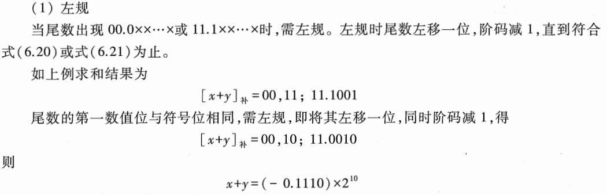
右规：当尾数出现01.XXXX或者10.XXXX时，尾数溢出，定点运算中不允许，但浮点数可以右规，尾数右移一位，阶码加一
舍入：对阶合并右规时，尾数低位丢失可能有误差影响精度。舍入提高尾数精度
"0 舍 1 入“法：类似于四舍五入，尾数右移时，被移去的最高数值位（即当前被移去位）为 0，则舍去；被移去的最高数值位为1 ，则在尾数的末位加 1。如果溢出，右规
“恒置1”法：尾数右移时，不论丢掉的最高数值位是 “1” 或“0" ，都使右移后的尾数末位恒置 ”1” 。
溢出判断：尾数右规后根据阶码判断。溢出由阶码的符号决定：阶码 01,xx 为上溢。 阶码 10, xx 为下溢，按机器零处理。
- 流程图：
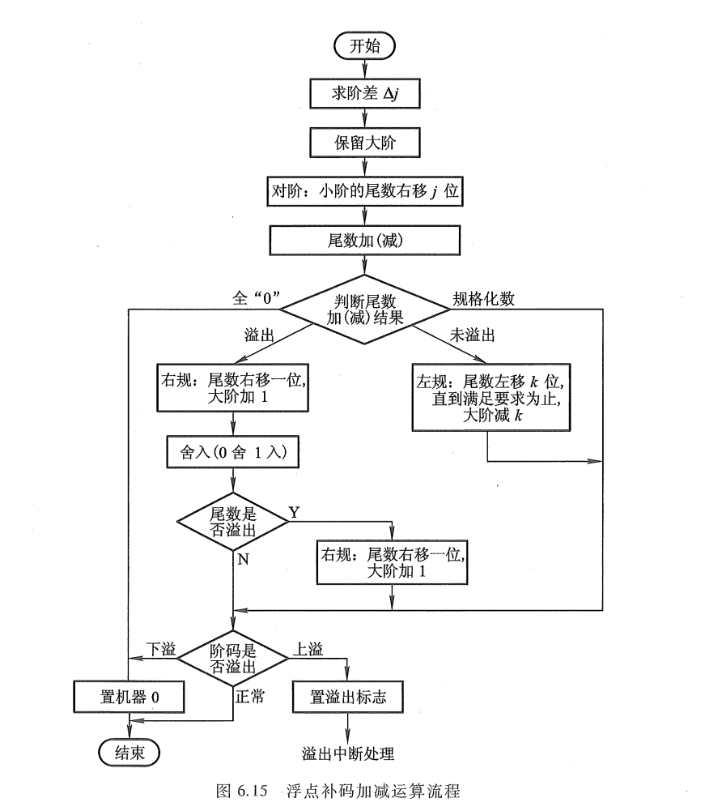
35A.说明原码乘/除法运算的基本步骤。（*）
- P243原码乘法运算
- 笔算乘法的改进，两数相乘可以视为加法和移位。A*B,则A为被乘数，B为乘数
运算过程：
- 假设有n位乘数，则进行n次加法运算和n次移位运算
- 由乘数末位确定被乘数是否与部分积相加，1加，0不加。然后相加结果右移一位形成新部分积。同时乘数右移一位形成新末位，最高位放部分积的最低位
- 加法时，被乘数与原部分积高位相加，低位移至乘数空出最高位
用一个寄存器存放被乘数，一个寄存器存放乘积的高位， 另一个寄存器存放乘数及乘积的低位，再配上加法器及其他相应电路，就可组成乘法器。
原码一位乘法：
乘积符号位由两原码符号位异或决定
接着两原码利用上述规则运算
例子：
硬件配置：三个n+1位寄存器分别存放被乘数，乘数，部分积；移位和加控制电路受乘数末位控制；计数器C控制逐位相乘次数；S存放乘积符号，CM位乘法标记

控制流程：
预处理(运算前)：清空A作为初始部分积，被乘数和乘数送入X和Q,计数器C存放乘数位数
首先通过被乘数和乘数的符号位异或确定乘积的符号位存于S,将被乘数和乘数变为绝对值
根据Qn的状态决定部分积是否加上被乘数，再右移一位重复n次
原码两位乘法（了解）
- 用两位乘数(ab)的状态决定新部分积：
- ab=00,原部分积右移两位
- ab=01,原部分积加被乘数后右移两位
- ab=10,原部分积加2倍被乘数后右移两位
- ab=11,原部分积加3倍被乘数后右移两位
除法运算
分析笔算除法：
- 须通过比较被除数（或余数）和除数绝对值的大小来确定商值，即lxl - lyl ，若差为正（够减）上商1 ，差为负（不够减）上商0。
每次减法总是保持余数不动低位补 ，再减去右移后的除数这一规则，则要求加法器 的位数必须为除数的两倍。所以右移除数可以用左移余数代替
对于计算机，每一位商直接写到寄存器的最低位，并把原来的部分商左移一位
原码除法：
符号位单独处理：商符由两数符号位异或求得，而商值由两数绝对值相除得
小数定点除法对被除数和除数有一定的约束，即必须满足下列条件：
- 0<|被除数|<=|除数|
- 避免除数或者被除数为0，前者得无限大，后者得0
- 商的位数一般和操作数相同
原码除法中由千对余数的处理不同，又可分为恢复余数法和不恢复余数法（加减交替法）两种
恢复余数法：
- 当余数为负时，需加上除数，将其恢复成原来的余数。
- 注意：第一次上的商在商的整数位上，这对小数除法而言，可用它作溢出判断。即当该位为 “1” 时，表示此除法溢出，不能进行，应由程序进行处 理；当该位为 “0” 时，说明除法合法，可以进行
- 恢复余数延长机器除法时间，并且操作不规范
- 例子：
加减交替法（不恢复余数法）

余数Ri大于零，商上“1”，2*Ri -|y|
余数Ri小于零，商上“0”，2*Ri+|y|
例子：
硬件配置：三个n+1位的寄存器分别存放被除数，除数，余数；移位和加控制逻辑受 Q的末位见控制 (Qn = 1做减法， Qn = 0做加法）;计数器C控制逐位相除次数；CD为除法标记（区别与惩罚标记CM)；Y为溢出标记；S为商符
控制流程：
预处理即除法前：清空Q,被除数和除数输入A和X；计数器C存放被除数的位数；
开始后，异或求商符放到S;被除数和除数变为绝对值
用第一次上商判断溢出，赋值Y
若无溢出，上商，AQ左移一位，根据上一次商值决定加减除数，n次后再上商（一共上商n+1次）
上述为小数除法，对于整数除法，0<|除数|<=|被除数|。上述讨论的小数除法完全适用于整数除法，只是整数除法的被除数位数可以是除数的两倍， 且要求被除数的高 位要比除数 (n 位）小，否则即为溢出。
35B.说明浮点乘/除法运算的基本步骤。
P274
两个浮点数相乘，乘积的阶码应为相乘两数的阶码之和，乘积的尾数应为相乘两数的尾数之积。
两个浮点数相除，商的阶码为被除数的阶码减去除数的阶码，尾数为被除数的尾数除以除数 的尾数所得的商
阶码运算：
阶码用补码运算，乘积的阶码为 [jx ]补＋ [jy] 补，商的阶码为[jx ]补 - [jy] 补。
同号相加或者异号相减判断溢出
阶码用移码运算：
- 相加时，必须减去直接相加而多加的2^n(偏移量)，由于真值移码和补码数值相同，符号相反，所以阶码相加可以变为[jx + jy]移 = [jx]移 + [jy]补；
- 相减时，加数或者减数的符号位取反变为补码，[jx - jy]移 = [jx]移 + [-jy]补
同时移码时，在原有移码符号位的前面（即高位）再增加 1位符号位，并规定该位恒用 “0” 表示，便能方便地进行溢出判断；溢出的条件是运算结果移码的最高符号位为 1。此时若低位符号位为0 ，表示上溢；低位符号位为 1，表示下溢。低位符号位为真正符号位
尾数运算
乘法：
- 检查0；若有一个为0,乘积为0
- 用定点小数的任何一种乘法运算，左规时阶下溢，作机器零处理；阶上溢，作溢出处理；
- 尾数相乘会得到一个双倍字长的结果，若限定只取 倍字长，则乘积的若干低位将会丢失。通常有两个办法作舍入处理
- 一是截断处理，无条件丢掉正常尾数最低位后全部数值，简单但是影响精度；
- 二是对于原码采用0舍1入时，“舍”使数的绝对值变小，“入”则大；对于补码，正数同原码，对负数，当丢失全为0，不舍入；当丢失的各位数中的最高位为 0时，且以下各位不全为1 ，或丢失的各位数中的最高位为1 ，且以下各位均为0时，则舍去被丢失的各位；当丢失的各位数中的最高位为1，且以下各位又不全为0时，则在保留尾数的最末位加1修正
除法：
- 检测被除数是否为0 ，若为0 ，则商为0 ；再检测除数是否为0 ，若为0 ，则商为无穷大，另作处理。
- 对已规格化的尾数，为了防止除法结果溢出，可先比较被除数和除数的绝对值，如果被除数的绝对值大于除数的绝对值，则先将被除数右移一位，其阶码加1 ，再作尾数相除
硬件配置：
- 浮点运算器主要由两个定点运算部件组成
- 一个是阶码运算部件，用来完成阶码加减，以及控制对阶时小阶的尾数右移次数和规格化时对阶码的调整；
- 另一个是尾数运算部件，用来完成尾数的四则运算以及判断尾数是否巳规格化
- 还需有判断运算结果是否溢出的电路等
36.试比较基址寻址和变址寻址，并举例说明其适用的场合。
P314
基址寻址
设有基址寄存器BR
其操作数的有效地址EA等于指令字中的形式地址与BR中的基地址相加
EA=A+(BR)
隐式基址寻址：在计算机内专门设有一个基址寄存 BR ，使用时用户不必明显指出该基址寄存器，只需由指令的寻址特征位反映出基址寻址即可。
显示基址寻址：显式是在一组通用寄存器里，由用户明确指出哪个寄存器用作基址寄存器，存放基地址。
基址寻址可以扩大操作数的寻址范围，因基址寄存器的位数可以大于形式地址的位数。便可实现对主存空间的更大范围寻访
基址寻址在多道程序中极为有用。用于为程序或数据分配存储空间，用户只需指出哪一个寄存器作为基址寄存器即可，通常由操作系统或管理程序确定基址寄存器的内容，在程序的执行过程中其值是不可变的，以确保系统安全可靠地运行。而指令字中的A 是可变的。
变址寻址：
- 类似基址寻址，其有效地址 EA 等于指令字中的形式地址 与变址寄存器 IX 的内容相加之和，EA=A+(IX)
- 只要变址寄存器位数足够，也可扩大操作数的寻址范围
- 在变址寻址中，变址寄存器的内容是由用户设定的，在程序执行过程中其值可变，而指令字中的 A是不可变的，主要用 于处理数组问题，适合编址循环程序。
- 变址寻址灵活，还可以与其他寻址方式结合使用。
- 对于基址寻址和变址寻址的异同
相同
- 都可用来扩大操作数的寻址范围
- 区别
- 基址寻址只要用于为程序或数据分配存储空间，故基址寄存器的内容通常由操作系统或管理程序确定，在程序的执行过程中其值是不可变的，而指令字中的 A 是可变的。在多道程序中极为有用。
- 在变址寻址中，变址寄存器的内容是由用户设定的，在程序的执行过程中其值可变，而指令字中的 A 是不可变的。主要用于处理数组问题，适合编址循环程序。
37.任意写出五种寻址方式，令EA为有效地址，A为形式地址，写出这五种寻址方式计算有效地址的表达式。
- P310
- 对于指令寻址：它分为顺序寻址和跳跃寻址两种
- 顺序寻址可通过程序计数器 PC ，自动形成下一条指令的地址；跳跃寻址则通过转移类指令实现。
- 对于数据寻址：在指令字中设一字段(寻址特征)来指明属千哪一种寻址方式。指令的地址码字段通常都不代表操作数的真实地址，故把它称为形式地址A 。操作数的真实地址称为有效地址EA ，它是由寻址方式和形式地址共同来确定的。
- 立即寻址：
- 操作数本身设在指令字内，即形式地址A不是操作数的地址，而是操作数本身，又称之为立即数。中“#”表示立即寻址特标记。
- 取出指令即可得到操作数，但A的位数限制立即数范围
- 直接寻址：
- 指令字中的形式地址A就是操作数的真实地址 EA,即EA=A
- 寻找操作数比较简单，但A的位数限制范围，而且修改A才能修改EA
- 隐含寻址：
- 其操作数的地址EA隐含在操作码或某个寄存器中
- 少了一个地址有利于缩短指令字长。
间接寻址：
形式地址A指出操作数有效地址的存储单元地址，即EA=(A)
它扩大了操作数的寻址范围，它便于编制程序,但是需要访存多次，延长了指令执行时间
- 寄存器寻址：
- 地址码字段直接指出寄存器编号即EA=Ri
- 寄存器寻址在指令执行阶段无须访存，减少了执行时间。由于地址字段只需指明寄存器编号，故指令字较短，节省了存储空间，因此寄存器寻址在计算机中得到广泛应用。

- 寄存器间接寻址：
- 地址码字段Ri的内容不是操作数，而是操作数所在主存单元的地址号，即有效地址 EA= (Ri)

- 基址寻址： EA=A+(BR)， 详见36.
变址寻址：EA=A+(IX)， 详见36.
相对寻址：
- EA是将程序计数器 PC 的内容（即当前指令的地址）与指令字中的形式地址相加而成，即 EA=(PC)+A
- 常被用于转移类指令，转移后的目标地址与当前指令有一段距离，称为相对位移量，它由指令字的形式地址A给出，故 A又称位移量
- 转移地址不固定,
- 堆栈寻址：
- 操作数只能从栈顶地址指示的存储单元 存或取。可见堆栈寻址也可视为一种隐含寻址，其操作数的地址总被隐含在 SP 中。
- 总结：
- 立即寻址
- 直接寻址：
EA = A - 隐含寻址
- 间接寻址：
EA = (A) - 寄存器寻址：
EA = R - 寄存器间接寻址：
EA = (R) - 基址寻址：
EA = A + (BR) - 变址寻址：
EA = A + (IX) - 相对寻址：
EA = (PC) + A - 堆栈寻址：
EA=(SP)
38.指令中有哪些字段？各有何作用？如何确定各字段的位数？
P300
指令通常由操作码和地址码组成，同时因为数据寻址方式种类较多，中必须设一字段来指明属千哪一种寻址方式，所以指令也可以分为操作码字段、寻址特征字段和地址码字段
操作码：
指明该指令所要完成的操作
通常，其位数反映了机器的操作种类， 也即机器允许的指令条数，所以其位数取决于指令系统的操作种类。
操作码的长度可以是固定的，也可以是变化的
地址码：
地址码用来指出该指令的源操作数的地址（一个或两个）、结果的地址以及下一条指令的地址。这里的“地址”可以是主存的地址，也可以是寄存器的地址，甚至可以是I/0设备的地址。
有寻找特征字段时，地址码字段和寻址特征字段共同指出操作数或指令的有效地址
其位数与寻址范围有关
寻址特征字段：
- 数据寻址方式种类较多，在指令字中必须来指明属千哪一种寻址方式
- 其位数取决于寻址方式的种类。
相关例题：P322!!!
39.RISC和CISC指令系统各自的特点。
- P329
- RISC 即精简指令系统计算机(Reduced Instruction Set Computer) :
- 简单地精简其指令集，用 20％的简单指令的组合来实现不常用的 80％的那些指令功能
- 控制器采用组合逻辑控制，不用微程序控制。
- 指令长度固定，指令格式种类少，寻址方式种类少。
- 多个通用寄存器。
- 除了存取数之外其余指令的操作都在寄存器内完成。
- 大部分指令在一个时钟周期内完成
- 寄存器窗口重叠技术
- 逻辑简单，设计出错可能性小，有错时也容易发现，可靠性高。
- 优化编译来更有效地支持高级语言程序
- CISC即复杂指令系统计算机(Complex Instruction Set Computer) ：
- 微程序控制
- 指令丰富、功能强大
- 寻址方式灵活
- RISC优点：
- 充分利用 VLSI 芯片的面积
- 提高计算机运算速度
- 便于设计，可降低成本，提高可靠性
- 有效支持高级语言程序
改变教材为计算机组成与设计（软硬件接口）第五版（中文版）(1)
40.请简述MIPS指令系统的R型、I型和J型指令格式，并举出指令实例。
P55
寄存器指令（R型指令）：
操作数（6bits），两个源操作数寄存器（5bits共10bits)，目的寄存器（5bits)，位移量（5bits)，功能（6bits)。一般R型指令op为000000，由funct决定操作种类
举例：add $t0 ,$s1,$s2
将寄存器s1和寄存器s2的数相加送到目的寄存器t0
立即数指令（I型指令）：
- 操作数（6bits），源操作数寄存器（5bits)，目的寄存器（5bits),constant or address（16bits)
- 对于常数constant取值范围为-2^15 ~~ +2^15 - 1
- 对于有效地址EA为address偏移加上rs中的基址（基址寻址）
举例：lw $t0,32($s3) 或 Sw $t0,32($s3)
- 这里， 19 (寄存器 $s3) 存放于 rs 字段， 8 (寄存器 $t0) 存放千 rt 字段， 32 存放于 address 字段。 注意，对于这条指令 rt 字段的意思已经改变： 在一条lw取字指令中， rt字段用于指明接收取数结果的目的寄存器
P76
跳转指令 （J型指令）
J 型除了6位操作码之外，其余位都是地址字段
举例：j 10000 ；跳转指令到10000。Target address=10000
或者 Target address = PC : (address × 4)
补充：对于分支指令为I型指令
其中寄存器为程序计数器 (Program Counter, PC)
这种分支寻址形式称为 PC相对寻址 (PC-relative addressing) ：一种寻址方式， 它将PC 和指令中的常数相加作为寻址结果
判断条件：（rs）== （rt）则转移，（rs）！= （rt）则转移
当（rs）>（rt）则转移,（rs）<（rt）则转移时，用比较置位和为零（不为零）则转移指令实现
41.在MIPS指令子集实现的时候，如何从单周期数据通路构造流水线？
- P182
- 流水线 (pipelining) 是一种实现多条指令重叠执行的技术，是一种在顺序指令流中利用指令间并行性的技术
- 将单周期数据通路分成IF,ID,EX,MEM,WB五个阶段，并在每两个阶段之间加上流水寄存器。
- 对于一个 MIPS指令包含如下5个处理步骤：
- IF: 从指令存储器中读取指令
- ID: 指令译码的同时读取寄存器。 MIPS 的指令格式允许同时进行指令译码和读寄存器
- EX: 执行操作或计算地址
- MEM: 从数据存储器中读取操作数
- WB: 将结果写回寄存器
- 教材的图：
- 在两个阶段之间，即上图各级间有分割线的地方需要加入寄存器，又被称为流水线寄存器
- 保留之前周期中产生的结果信息，以供本阶段使用
- 需要注意：写回阶段的后面没有流水线寄存器
- 对于装载指令（lw)的五个阶段
iF(取指令)：
- 使用PC中的地址从指令储存器读取指令
- 指令放入IF/ID流水线寄存器
- PC+4放入IF/ID流水线寄存器以备后序指令使用（beg)
ID(译码读寄存器堆)：
- 一个16位的立即数（可扩展为带符号的32位数）和两个寄存器号（rs和rt用于读取寄存器）读出来的数据,以及PC+4一起存入ID/EX 流水线寄存器
EX(执行和计算)：
- 读取由寄存器传过来的值以及经符号扩展后的立即数，并用 ALU 将它们相加，结果存入EX/MEM 流水线寄存器中
MEM（访存）：
- 使用从 EX/MEM 流水线寄存器中得到的地址读取数据存储器，并将数据存入MEM/WB流水线寄存器中
WB（写回）：
- 从 MEM/WB 流水线寄存器中读取数据 并将它写回图中部的寄存器堆。
对于存储指令（sw)的五个阶段
IF: 利用 PC 中的地址从存储器中读出指令，然后将指令放入IF/ID流水线寄存器 中
ID:
- IF/ID 流水线寄存器中的指令包括用于读取寄存器的两个寄存器号读出来的数据和用千符号扩展的 16 位立即数。
- 读出的两个寄存器值和符号扩展后的32 位立即数 都存放在ID/EX 流水线寄存器中。
EX: 计算有效地址存放在 EX/MEM 流水线寄存器中
- MEM：
- 值得注意的是，需要写入存储器的数据在较早的流水级（ID/EX流水寄存器）中已经读出并存放在 ID/EX 中。
- WB:
- 存储指令在写回步骤中不做任何事情。
42.流水线中有哪三种冒险？请简述，并至少举出一种解决冒险的方法。
- 流水线
- 定义：在下一个时钟周期中下一条指令不能执行的情形，称为冒险
- 结构冒险： 需要的资源被占用
- 数据冒险： 需要等待前面指令完成其数据读写操作
- 控制冒险：根据前面正在执行的指令决策控制操作
结构冒险
本质上是一个硬件层面的资源竞争问题，也就是一个硬件电路层面的问题
CPU在同一个时钟周期，同时在运行两条计算机指令的不同阶段。但是这两个不同的阶段，可能会用到同样的硬件电路
典例：对于内存的数据访问，即存储器发生结构冒险（存、取冲突）
具体来说， Load/Store对存储器读/写数据时都要进行内存数据的读取即同一个时钟周期两个读取不同内存地址的信号
解决方案：
流水线的数据通路需要将指令和数据分别存储,让它们各有各的地址译码器
这样把内存拆成两部分的解决方案，在计算机体系结构里叫做哈佛结构
2. 在CPU 内部的高速缓存部分进行了区分，把高速缓存分成了指令缓存（Instruction Cache）和数据缓存（Data Cache）两部分。指令缓存和数据缓存的拆分，使得我们的CPU在进行数据访问和取指令的时候，不会再发生资源冲突的问题了
3. 指令集设计
4. 让流水线发生停顿，即产生空泡（Bubble或Stall）
对于寄存器发生结构冒险（读、写冲突）
- 解决方案：
- （读、写分离），让前半个时钟周期进行写操作，后半个时钟周期进行读操作，同时在寄存器上分别设置单独的读写接口
- 让流水线发生停顿，即产生空泡（Bubble或Stall）
数据冒险
本质上，数据冒险就是同时在执行的多个指令之间，有数据依赖的情况
对于这些数据依赖：
先写后读（Read After Write，RAW），典型数据依赖
寄存器先执行写操作后执行读操作，但是此时还未写回，产生RAW数据冲突
- 指令i生成的结果可能会被指令j用到
- 指令j数据依赖于指令k，指令k数据依赖于指令i
先读后写（Write After Read，WAR），反依赖
寄存器先执行读操作后执行写操作，但是此时还未读取，产生WAR数据冲突
- 当指令j对指令i读取的寄存器或存储地址执行写操作是，就会在指令i和指令j之间发生反依赖(antidependence)。
写后再写（Write After Write，WAW），输出依赖
寄存器先执行写操作后又执行写操作，但是此时还未写回，产生WAW数据冲突
- 当指令i和指令j对同一个寄存器或存储地址执行写操作时，发生输出依赖(output dependence)。
- 对于反依赖和输出依赖，可以利用寄存器换名消除依赖。详见Tomasulo算法。
先写后读（Read After Write，RAW），典型数据依赖

存在这样的指令，必须依赖于之前访问数据的指令完成
sub $2, $1, $3 //Register $2 written by sub
and $12, $2, $5 //1st operand($2) depends on sub
or $13, $6, $2 ///2nd operand($2) depends on sub
add $14, $2, $2 //1st($2) & 2nd($2) depend on sub
sw $15, 100($2) //Base ($2} depends on sub
and指令需要s2寄存器的值，但是sub还没有将新的值写入s2寄存器，
即后一条指令需要使用计算后的结果,又称sub-and为EX冒险中的1a类
- 判断条件：
- ID/EX. RegiserRs 表示 一个需要流水线寄存器 ID/EX 获得的源寄存器号
- EX/MEM. RegisterRd 字段是 ALU 指令（来自 Rd 字段）或装载指令（来自 Rt字段） 的目标寄存器号
这种情况是将前一条指令的结果旁路到任何一个ALU输入中。 如果前一条指令要写寄存器堆且要写的寄存器号与ALU输入要读的寄存器号 (A 或B) 一致（只要不是寄存器0)， 那么就调整多选器从流水线寄存器EX/MEM 中读取数值。（寄存器0为特殊寄存器，只读不写）
同理，sub-or是MEM冒险中的2b类
这种情况是将前面第二条条指令的结果旁路到任何一个ALU输入中。如果前第二条指令要写寄存器堆且要写的寄存器号与ALU输入要读的寄存器号 (A 或B) 一致（只要不是寄存器0)， 那么就调整多选器从流水线寄存器EX/MEM 中读取数值。（寄存器0为特殊寄存器，只读不写）
sub-add 上的两个相关性都不是冒险，因为在add的ID级寄存器堆己能提供相应的数据（前提为读写分离，并且一个周期内先写后读）
sub 指令和 SW 指令之间也不存在数据冒险，因为 SW指令在 sub 指令写寄存器$2 后才读取$2。
解决方法
- 向其间插入
空泡(Bubbles)。

- 向其间插入
前推(Forwarding)：也叫
旁路，是从内部寄存器而非程序员可见的寄存器或存储器中提前取出数据。不用等到结果存储到寄存器后
- 需要数据通路中转发连接
无法通过转发避免所有阻塞
- 需要时尚未计算出结果
- 转发不能解决时间上的后推
当一条指令试图读取一个由前一条装载指令读入的寄存器时，就无法使用旁路解决冒险了
当装载指令后紧跟着一个需要读取它的结果的指令时，必须采用相应的机制阻塞流水线
例如：
- lw $0, 20(&1)
- sub $12, $0, $13
- 解决办法1
- 插入一个周期的冒泡
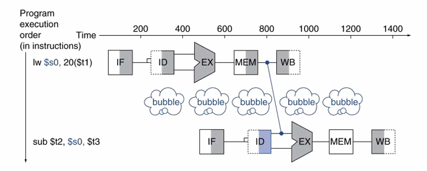
- 解决办法2
- 代码重排以避免在下条指令中使用装载结果
- C code for A = B + E; C = B + F;
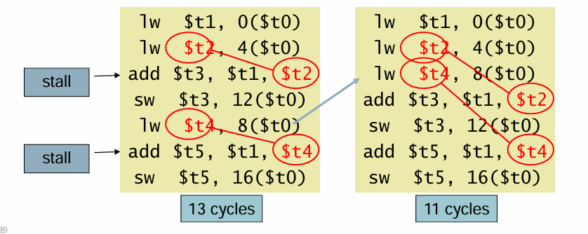
- 补充转发条件：
- 仅当指令有写回寄存器的操作时才转发：EX/MEM.RegWrite, MEM/WB.RegWrite
- 仅当指令中的目标寄存器不是$zero才转发：EX/MEM.RegisterRd ≠ 0, MEM/WB.RegisterRd ≠ 0
补充双重冒险情况
- add $1, $1, $2
- add $1, $1, $3
- add $1, $1, $4
EX冒险和MEM冒险同时发生时，使用最新结果，所以修订MEM冒险条件
只在EX 冒险条件不为真的时候，转发
- 补充阻塞和冒泡
- 将ID/EX 寄存器中的控制变量的值置为0，即EX, MEM and WB 空操作
- 又称为空指令：一种不进行任何操作或不改变任何状态的指令。
- 阻止更新PC 和IF/ID 寄存器中的值
- 将执行中的指令重新解码
- 再次取出后续指令
- 对lw指令阻塞1个周期后允许MEM读取数据，接下来可以转到EX段
最后的带有冒险检测的数据通路
控制冒险
- 决策依赖于一条指令的结果，而其他指令正在执行中。
- 比如说分支跳转指令，分支决定控制流程
- 取下一条指令依赖于分支计算结果
- 流水线并不总是能够取到正确的指令
这种为了确保预取正确指令而导致的延迟叫作控制冒险 (control hazard) 或分支冒险 ( branch hazard)
解决办法
- 分支阻塞：在取下一条指令前一直等待分支计算结果
- 分支预测
对于上述分支阻塞，阻塞惩罚不可取，延长流水线并不能提前确定分支结果
所以预测分支结果，仅在预测错误时，才发生阻塞
具体有静态分支预测和动态分支预测
- 静态分支预测
- 基于典型的分支动作，例如：循环和if状态跳转
- 向后预测已经使用的分支
- 向前预测没有使用的分支
可以在MEM中确定if分支结果
并且通过目标地址加法器，寄存器比较器将分支地址计算提前到 ID 段
- 动态分支预测
- 硬件衡量实际的分支行为 ， 例如：保存每条分支的历史记录
- 假定未来行为将继续当前趋势 。 当预测错误时，发生阻塞，重新取指，并更新历史记录
同时预测位又分为
一位预测位：有缺陷
- 预测在分支发生90%的情况下，内部循环分支将被错误预测两次
两位预测位：只有连续两次预测错误时才改变预测位
补充：分支延迟时间槽调度，
43. 请简述Flynn分类法将计算机系统结构分成哪四类。
- 单指令流、单数据流，Single Instruction Stream, Single Data Stream, SISD。
- 单处理器
- 指令级并行，如流水线，动态调度，超标量
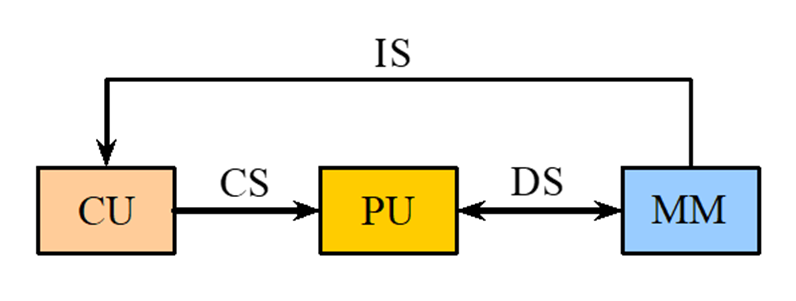
- 单指令流、多数据流，Single Instruction Stream, Multiple Data Stream, SIMD
- 同一指令操纵多条数据流，不同处理器对多个数据项并行处理
- 每个数据处理器有数据存储器，但是只有一个指令存储器和控制器
- 向量体系结构，GPU
- 多指令流、单数据流，Multiple Instruction Stream, Single Data Stream, MISD
- 每个处理器自已取指令，处理数据
- 任务级并行
- 紧密耦合的MIMD结构—线程级并行
- 松散耦合MIMD结构—集群
- 多指令流、多数据流， Multiple Instruction Stream, Multiple Data Stream, MIMD
- 目前为止，没有此种类型的商用机；
- 脉动阵列
44.请简述程序局部性原理。
- 定义
- 程序执行时所访问的存储器地址分布相对地簇聚。
- 程序执行时间的90%都是在执行程序中10%的代码。（经验规则）
- 程序即将用到的信息很可能就是目前正在使用的信息。（时间局部性）
- 程序即将用到的信息很可能与目前正在使用的信息在空间上相邻或者临近。（空间局部性）
所以，重点关注常见情形进行优化
- 对经常发生的情况采用优化方法的原则进行选择，以得到更多的总体上的改进。
- 优化是指分配更多的资源、达到更高的性能或者分配更多的电能等
- 例如
- 不溢出是经常性事件。针对不溢出的情况进行性能设计
- 处理器的取值、译码比乘法器用的更加频繁，优先优化取指令和译码
45.请简述Amdahl定律。
定义：
- 计算机系统的某一部分加速的时候，该加速部分对系统整体性能的影响取决于该部分的重要性和加速程度。
加快某部件执行速度所能获得的系统性能加速比，受限于该部件的执行时间占系统中总执行时间的百分比
Amdahl定律也是一种性能改进的递减规则
如果仅仅对计算任务中的一部分做性能改进，则改进得越多，所得到的总体性能的提升就越有限
- 重要推论：如果只针对整个任务的一部分进行改进和优化，那么所获得的加速比不超过
指标：加速比--衡量系统的性能改进了多少，即前后执行时间比值（性能 = 1/执行时间）
- 解释：
- 可改进比列：在改进前的系统中，可改进部分的执行时间在总的执行时间中所占的比例
- 部件加速比：可改进部分改进以后，性能提高的倍数。它是改进前所需的执行时间与改进后执行时间的比。 一般情况下部件加速比是大于1的。
- 公式拓展
例题：
- 补充：摩尔定律
- 被称为计算机第一定律。摩尔定律是指单芯片上可容纳的晶体管数目，约每隔18个月便会增加一倍，性能也将提升一倍
46.影响CPU时间的因素包括什么？（提示：从CPU公式入手，考虑3个参数的影响因素）
平均指令周期数 ：CPI（Cycle Per Instruction）表示执行某个程序的指令平均周期数，可以用来衡量计算机运行速度。
时钟周期T：也称为振荡周期，定义为时钟频率的倒数，在一个时钟周期内，CPU仅完成一个最基本的动作。
各个参数含义：
- CPI（Cycle Per Instruction）：表示执行某个程序的指令平均周期数
- IC：程序所执行的指令条数
执行一个程序所需的CPU时间
- CPU时间 = 执行程序所需的时钟周期数×时钟周期时间
- 执行程序所需的时钟周期数 = 每条指令执行的平均时钟周期数 CPI ×所执行的指令条数 IC；
- 时钟周期时间是系统时钟频率的倒数。
其他形式：
- CPU时间 = IC ×CPI×时钟周期时间
- CPU时间 = IC ×CPI×（1/时钟频率）
如何降低CPU时间？
- 时钟周期时间：取决于硬件实现技术和计算机组成。
- CPI：取决于计算机组成和指令集结构。
- IC：取决于指令集结构和编译技术。
47.请简要说明提高计算机系统并行性的3种技术途径，并分别从单机和多机系统的角度举例。
- 并行性的含义
- 计算机系统在同一时刻或者同一时间间隔内进行多种运算或操作。即只要在时间 上相互重叠，就存在并行性。
- 同时性：两个或两个以上的事件在同一时刻发生
- 并发性：两个或两个以上的事件在同一时间间内发生
三种途径：时间重叠，资源重复，资源共享
时间重叠：
引入时间因素，让多个处理过程在时间上相互错开，轮流重叠地使用同一套硬件设备的各个部分，以加快硬件周转而赢得速度
- 对于单处理器，可以使部件功能专用化
- 把一件工作按功能分割为若干相互联系的部分
- 把每一部分指定给专门的部件完成
- 按时间重叠原理把各部分的执行过程在时间上重叠起来，使所有部件依次分工完成一组同样的工作
- 典例：流水线
对于多处理器，可以试处理机专用化
- 专用外围处理机：分离I/O功能
- 专用处理机，如数组运算、高级语言翻译、数据库管理
- 异构型多处理机系统，多个处理机依次完成规定的功能和任务
资源重复
引入空间因素，以数量取胜。通过重复设置硬件资源，大幅度地提高计算机系统的性能
- 对于单处理机 -重复设置功能部件
- 多存储体并行
- 数据/指令独立存储体
- 重复设置运算部件
多处理机中 –重复设置处理机
- 容错系统
- 同构型多处理机系统，由多个同类型或至少担负同等功能的处理机组成，它们同时处理同 一作业中能并行执行的多个任务。（类似GPU）
资源共享
这是一种软件方法，它使多个任务按一定时间顺序轮流使用同一套硬件设备。 如，多道程序。
- 对于单处理机
- 分时系统
- 对于多处理机
- 分布式系统
- 补充：单机系统和多机系统中并行性的发展
这张图综合展示了单机系统和多机系统中并行性发展的多种技术和概念。
单机系统并行性发展：
- 时间重叠：通过技术如指令流水线、先行控制和高速缓存，使得单个处理器能够在时间上重叠处理多个任务，提高处理器的利用率。
- 资源重复：通过增加多存贮体和多操作部件，使得单机系统能够同时处理更多的任务，实现硬件资源的并行使用。
- 资源共享：通过多道程序、分时系统和虚拟存贮器等技术，使得多个程序或任务能够共享处理器资源，提高资源的利用率。
多机系统并行性发展：
- 多终端远程终端：允许多个用户通过远程终端访问计算资源，实现资源共享。
- 分布处理系统：通过局域计算机网连接多个处理单元，实现任务的分布式处理，提高处理能力和灵活性。
- 通信处理机：专门用于处理网络通信的处理器，提高网络化并行处理的效率。
多计算机系统：
- 同构型多处理机：所有处理单元在结构和功能上都是相同的，易于管理和编程。
- 异构型多处理机：处理单元在结构和功能上有所不同，可以根据任务需求进行优化，提高系统的整体性能。
- 相联处理机：处理单元之间有特定的连接方式，可以是紧密耦合或松散耦合，影响系统的通信和同步机制。
系统结构：
- 紧密耦合系统：处理单元之间高度集成，通信和同步机制紧密，适用于需要高速通信和协调的场合。
- 松散耦合系统：处理单元之间相对独立，通过消息传递进行通信，适用于分布式系统，提高系统的可扩展性和容错性。
- 专用外围处理机：用于特定任务的处理器，如数据库处理，提高特定任务的处理效率。
功能专用化：
- 通过将特定功能分配给特定的处理器，可以提高处理效率和性能，适用于需要特定处理能力的应用场景。
网络化：
- 通过计算机网络实现资源的共享和任务的分布式处理，提高系统的灵活性和可扩展性。
48.请说明什么是静态调度？什么是动态调度？动态调度的优点是什么？
静态调度
依靠编译器对代码进行调度，也就是在代码被执行之前进行调度；
通过把相关的指令拉开距离来减少可能产生的停顿
动态调度
在程序的执行过程中，依靠专门硬件对代码进行调度，减少数据相关导致的停顿
将ID又分成两个阶段
流出（Issue，IS）阶段：指令译码，检查结构冲突
读操作数（Read Operands，RO）阶段：检测数据冲突，如果没有，继续执行；如果有，等待数据冲突消失，然后读操作数
- 指令的动态调度导致了指令的乱序执行，指令的乱序执行导致了有反相关和输出相关的指令进入流水线之后产生读后写冲突和写后写冲突
上述问题可以采用寄存器换名技术，消除名相关
补充：
- 指令顺序执行：指令放入流水线的顺序和指令完成的顺序一致
- 指令乱序执行：指令放入流水线的顺序和指令完成的顺序不一致，也就是说有些指令进入流水线后被阻塞的，而在其后进入流水线的指令先完成了。
优点：
- 在指令的执行过程中进行调度，使得无关的指令得以先执行，减少阻塞
- 处理一些在编译时情况不明的相关（如存储器访问的相关）
- 使本来是面向某一流水线优化编译的代码在其他的流水线（动态调度）上也能高效地执行,可移植性
- 缺点：
- 动态指令调度将会引起指令乱序执行（但是可以使用换名技术消除名相关（包括反相关和输出相关））
- 指令乱序完成使得异常处理困难
- 硬件复杂性的显著增加
49. 请简述Tomasulo算法的基本思想，并分析其局限性。
- 核心思想：
- 记录和检测指令相关，操作数一旦就绪就立即执行，把发生RAW冲突的可能性减少到最小
- 通过寄存器换名来消除WAR冲突和WAW冲突
- 寄存器换名是通过保留站和流出逻辑来共同完成的
- 指令流出并且操作数未就绪，将该指令中相应的寄存器号换名为将产生这个操作数的保留站的标识
- 指令流出到保留站后，其操作数寄存器号换成了数据本身（如果该数据已经就绪），或换成了保留站的标识*，不再与寄存器有关系。
- 优点：
- 冲突检测和指令执行控制是分布的
- 保留站中的信息决定了什么时候指令可以在该功能部件开始执行
- 计算结果通过CDB直接从产生它的保留站传送到所有需要它的功能部件，而不用经过寄存器
- 消除了WAW冲突和WAR冲突导致的停顿
- 使用保留站进行寄存器换名
- 冲突检测和指令执行控制是分布的
- 局限性
- 实现复杂，需要较高的硬件成本
- 公共数据总线（CDB）的性能限制：CDB需要进行多个关联比较，每个CDB必须到达多个功能单元，这导致高电容、高布线密度，并且每个周期内完成的功能单元数量有限
- 需要对Load/Store指令进行重排序：Load指令需要检查所有活跃的Store指令的A字段，而Store指令需要检查早期Load和Store指令的A字段
- 无法实现分支预测和处理异常
- Tomasulo的基本结构
- 保留站
- 每个保留站中保存一条已经流出并等待到本功能部件执行的指令（相关信息）
- 保留操作码、操作数以及用于检测和解决冲突的信息
- 在一条指令流出送到保留站的时候：
- 如果该指令的源操作数已经在寄存器中就绪，则将操作数取到该保留站中
- 如果操作数还没有计算出来，则在该保留站中记录即将产生这个操作数的保留站的标识
- 每个保留站都有一个标识字段，唯一地标识了该保留站
- 公共数据总线CDB （一条重要的数据通路）
- 功能部件的计算结果都是送到CDB上，再将结果送到目的地
- 多个执行部件且采用多流出（多数据流），需要多条CDB
- 存储器读取的数据也送到CDB
- CDB连接到除了load缓冲器以外的所有部件的人口
浮点寄存器通过一对总线连接到功能部件，并通过CDB连接到store缓冲器的人口
load缓冲器
存放计算有效地址的分量
- 记录正在进行的load访存，等待存储器响应
保存已经完成了的load的结果（即从存储器取来的数据），等待CDB传输
store缓冲器
存放用于计算有效地址的分量
- 保存正在进行的store访存的目标地址，该store正在等待存储数据的到达
保存该store的地址和数据，直到存储部件接收
浮点寄存器EP
十六个：F0,F2……F30
通过一对总线连接到功能部件，并通过CDB连接到store缓冲器
指令队列
指令部件送来的指令放入指令队列
按先进先出的顺序流出
运算部件
浮点加法器完成加法和减法操作
浮点乘法器完成乘法和除法操作
Tomasulo算法的执行步骤：流出，执行，写结果
例题，详见PPT
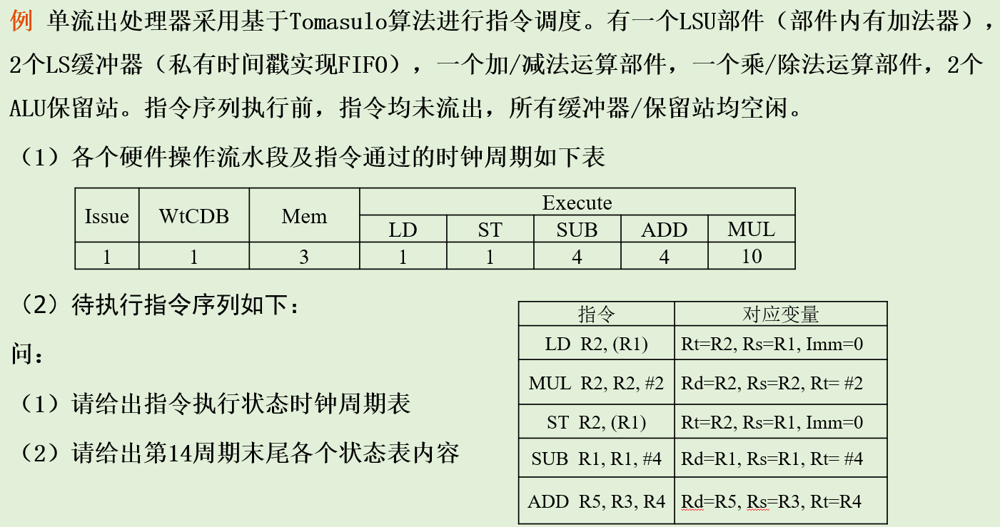
50.请说明什么是动态分支预测？有何优点？
- 定义
通过硬件技术，在程序执行时根据每一条转移指令过去的转移历史记录来预测下一次转移的方向。通过提前预测分支方向，减少或消除控制相关导致的流水线停顿。
优点
- 根据程序的执行过程动态地改变转移的预测方向，因此有更好的准确度和适应性
- 程序每次执行时，可能预测的分支方向与前次相同或不同
从简单到复杂的动态转移预测技术如下：
- 分支预测缓存器（分支历史表）（BHT）
- 分支目标缓冲器（BTB）
- 基于硬件的前瞻执行(ROB)
以上预测机制的性能随着复杂性与硬件的增加而有效地提高
补充：动态分支预测技术和静态分支预测技术的区别
- 静态分支预测技术所进行的操作事先预定好的 ，与分支的实际执行情况无关；
- 动态分支预测技术的方法在程序运行时根据分支执行过去的表现预测其将来的行为
- 分支指令过去的表现就是记录分支的历史信息
51.请简述分支历史表BHT的基本思想。
- 分支历史表BHT（Branch History Table）或者 分支预测缓冲器（Branch Prediciton Buffer）
- 最简单的动态分支预测方法
- 用BHT来记录分支指令最近一次或几次的执行情况（成功或不成功），并据此进行预测分支方向
- 只有1个预测位的分支预测缓冲
- 记录分支指令最近一次的历史，BHT中只需要1位二进制位
- 在记录里：
- “0”记录分支不成功， “1”记录分支成功
- 遇见1，预测成功。实际成功则保持1，实际失败置0
- 遇见0，预测失败。实际失败则保持0，实际成功置1
- 分支预测缓冲技术包括两个步骤
- 分支预测：根据当前缓冲记录预测
- 预测位修改
- 分支预测错误时，预测位就被修改，并且需要恢复现场，程序从分支指令处重新执行
- 两位预测位
- 当前状态下，预测看第一位, "1" 预测成功， “0”预测失败
- 连续2次预测错误会导致翻转，也就是从上半部分进入下半部分，或者从下半部分进入上半部分。
- BHT适用：
- 判定分支是否成功所需的时间大于确定分支目标地址所需的时间
- 对于前述5段经典流水线：由于判定分支是否成功和计算分支目标地址都是在ID段完成，所以BHT方法不会给该流水线带来好处
52.请简述分支目标缓冲器BTB的基本思想。
- 目的
尽早知道分支是否成功、尽早知道分支目标地址、尽早获得分支目标指令
- 这个缓冲区就是分支目标缓冲器（Branch-Target Buffer，简记为BTB，或者Branch-Target Cache）
将分支成功的分支指令的地址和它的分支目标地址都放到一个缓冲区中保存起来，缓冲区以分支指令的地址作为标识
BTB表结构
用专门的硬件实现的一张表格
表格中的每一项至少有两个字段
- 执行过的成功分支指令的地址（匹配标识）
- 预测的分支目标地址
- 相关操作：
- 预测错误或在BTB中没有匹配的项，要有至少2个时钟周期的开销
- 更新BTB中的项，要花费一个时钟周期
- 停止取指令，那么取新的指令又要花费一个时钟周期
BTB表的另一种形式：
- 在分支目标缓冲器中存放一条或者多条分支目标处的指令
- 更快地获得分支目标处的指令
- 一次提供分支目标处的多条指令，这对于多流出处理器是很有必要的
- 分支折叠（branch folding）的优化
53.请简述基于硬件的前瞻算法基本思想。
基本思想
对分支指令的结果进行猜测，并假设这个猜测总是对的，然后按这个猜测结果继续取出、流出和执行后续的指令。只是执行指令的结果不是写回到寄存器或存储器，而是放到一个称为ROB（ReOrder Buffer）的缓冲器中。等到相应的指令得到“确认”（commit）（即确实是应该执行的）之后，才将结果写入寄存器或存储器
ROB：在猜测错误时能够恢复现场（即没有进行不可恢复的写操作）
基于硬件的前瞻执行结合了三种思想:(动态预测+猜测执行+保留站技术)
- 动态分支预测。用来选择后续执行的指令
- 在控制相关的结果尚未出来之前，前瞻地执行后续指令
- 动态调度对基本块的各种组合进行跨基本块的调度
- 实质是 数据流执行(data flow execution)：只要操作数有效，指令就执行
对Tomasulo算法加以扩充, 写结果和指令完成都在“写结果”段完成，而在前瞻执行中加以区分，分成两个不同的段:
- 写结果段
- 把前瞻执行的结果写到ROB中
- 通过CDB在指令之间传送结果，供需要用到这些结果的指令使用
- 指令确认段：在分支指令的结果出来后，对相应指令的前瞻执行给予确认
- 猜测是对的，把在ROB中的结果写到寄存器或存储器
- 猜测是错误的，那就不予以确认，并从那条分支指令的另一条路径开始重新执行
- ROB中的每一项由以下4个字段组成：:
- 指令类型:指出该指令是分支指令、store指令或寄存器操作指令
- 目标地址: 指令执行结果应写入的目标寄存器号（如果是load和ALU指令）或存储器单元的地址（如果是store指令）
- 数据值字段: 保存指令前瞻执行的结果，直到指令得到确认
- 就绪字段: 指出指令是否已经完成执行并且数据已就绪
- 写结果段
54.请在PVP、SMP、MPP、DSM和COW中任选一种，简要描述其特点。
- PVP，Parallel Vector Processor, 并行向量处理机
- 包含了少量的高性能专门设计定制的向量处理器 ＶＰ，每个至少具有１Ｇflops的处理能力
- 存储器以兆字节每秒的速度向处理器提供数据
- 向量处理器VP和共享存储模块通过高带宽的交叉开关网络互连
- 通常不使用高速缓存，而是使用大量的向量寄存器和指令缓冲器
- SMP, Symmetric Multiprocessor, 对称多处理机
- 使用商品微处理器（具有片上或外置高速缓存）
- 由高速总线（或交叉开关）连向共享存储器和I/O
- 系统是对称的, 每个处理器可等同的访问共享存储器、Ｉ／Ｏ设备和操作系统服务
- MPP, Massively Parallel Processor, 大规模并行处理机
- 一般是指超大型计算机系统
- 处理节点采用商品微处理器；每个节点上有自己的局部存储器；采用高通信带宽和低延迟的互连网络（专门设计和定制的）进行节点互连；
- 异步的ＭＩＭＤ机器，程序系由多个进程组成，每个都有其私有地址空间，进程间采用传递消息相互作用
- 主要应用是科学计算、工程模拟和信号处理等以计算为主的领域
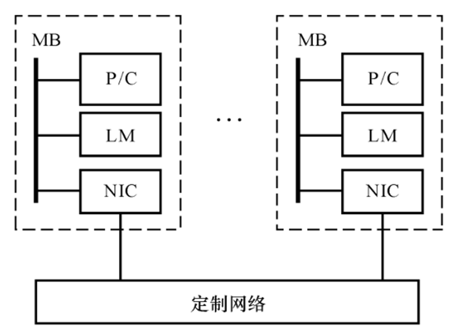
DSM，Distributed Shared Memory, 分布式共享存储多处理机
- 物理上有分布在各节点中的局部存储器，但是对用户而言，系统硬件和软件提供了逻辑上单地址的编程空间
- 高速缓存目录DIR用以支持分布高速缓存的一致性
- ＤＳＭ 相对于 ＭＰＰ的优越性是编程较容易
COW，Cluster of Workstations, 工作站集群
- 集群往往是低成本的变形的ＭＰＰ
- ＣＯＷ 的每个节点都是一个完整的工作站
- 各节点通过一种低成本的商品（标准）网络（如以太网、ＦＤＤＩ和 ＡＴＭ 开关等）互连
- 各节点内总是有本地磁盘，而 ＭＰＰ节点内却没有
- 节点内的网络接口是松散耦合到Ｉ／Ｏ 总线上的，而 ＭＰＰ内的网络接口是连到处理节点的存储总线上的，因而可谓是紧耦合式的
- 一个完整的操作系统驻留在每个节点中，而 ＭＰＰ中通常只是个微核
- 从存储角度来看MIMD
- 单地址空间共享存储
- 存储器可以是物理上集中的或者分布的，但是所有存储单元有统一的地址空间，并被所有的处理器所访问
- 均匀存储访问:SMP
- 非均匀存储访问:DSM
- 多地址空间非共享存储:MPP
- 单地址空间共享存储
55.什么是多处理机Cache一致性问题？
- 允许共享数据进入Cache，就可能出现多个处理器的Cache中都有同一存储块的副本，当其中某个处理器对其Cache中的数据进行修改后，就会使得其Cache中的数据与其他Cache中的数据不一致。
- 存储器的一致性
- 如果对某个数据项的任何读操作均可得到其最新写入的值，则认为这个存储系统是一致的
- 存储系统行为的两个不同方面：
- 读操作得到的是什么值
- 什么时候才能将已写入的值返回给读操作
- 处理器P对单元X进行一次写之后又对单元X进行读，读和写之间没有其他处理器对单元X进行写，则P读到的值总是前面写进去的值
- 处理器P对单元X进行写之后，另一处理器Q对单元X进行读，读和写之间无其他写，则Q读到的值应为P写进去的值
- 对同一单元的写是串行化的，即任意两个处理器对同一单元的两次写，从各个处理器的角度看来顺序都是相同的。(写串行化 )
56.请简述监听式协议的原理。
- 每个Cache除了包含物理存储器中块的数据拷贝之外，也保存着各个块的共享状态信息
- Cache通常连在共享存储器的总线上，当某个Cache需要访问存储器时，它会把请求放到总线上广播出去，其他各个Cache控制器通过监听总线（它们一直在监听）来判断它们是否有总线上请求的数据块。如果有，就进行相应的操作。
- 原子操作：比如对写不命中的检查、申请总线和接收响应作为一个单独的原子操作，中间不被打断
- 监听协议举例（前提：写作废，写回法， 原子操作）
- 在每个结点内嵌入一个有限状态控制器
- 该控制器根据来自处理器或总线的请求以及Cache块的状态，做出相应的响应
- 每个数据块的状态取以下3种状态中的一种：
- 无效（简称I）：Cache中该块的内容为无效
- 共享（简称S）：该块可能处于共享状态，在多个处理器中都有副本。这些副本都相同，且与存储器中相应的块相同
- 已修改（简称M）：该块已经被修改过，并且还没写入存储器，块中的内容是最新的，系统中唯一的最新副本，并且“已修改” 隐含表明该块是独占的（exclusive）
- 请求来自处理器

- 请求来自总线
57.请简述目录式协议的原理。（自学）
- 基本思想：物理存储器中数据块的共享状态被保存在一个称为目录的地方
- 广播和监听的机制使得监听一致性协议的可扩放性很差。
寻找替代监听协议的一致性协议。
目录协议：
目录：一种集中的数据结构。对于存储器中的每一个可以调入Cache的数据块，在目录中设置一条目录项，用于记录该块的状态以及哪些Cache中有副本等相关信息
对于任何一个数据块，都可以快速地在唯一的一个位置中找到相关的信息。这使一致性协议避免了广播操作
位向量：记录哪些Cache中有副本
每一位对应于一个处理器
长度与处理器的个数成正比
由位向量指定的处理机的集合称为共享集S
实现方案：
目录法最简单的实现方案：对于存储器中每一块都在目录中设置一项。目录中的信息量与M（存储器中存储块的总数量）×N（处理器的个数）成正比
58. 请比较说明写作废协议和写更新协议性能上的差别。（自学）
写作废协议
- 在一个处理器写某个数据项之前保证它对该数据项有唯一的访问权
写更新协议
- 当一个处理器写某数据项时，通过广播使其它 Cache中所有对应的该数据项拷贝进行更新
写更新和写作废协议性能上的差别
- 对同一数据（字）的多个写而中间无读操作情况, 写更新协议需进行多次写广播操作，而在写作废协议下只需一次作废操作
- 对同一块中多个（不同）字进行写，写更新协议对每个字的写均要进行一次广播，而在写作废协议下仅在对本块第 一次写时进行作废操作
- 写作废是针对Cache块进行操作，而写更新则是针对字（或字节）进行。
- 一个处理器A写到另一个处理器B读之间的延迟通常在写更新模式中较低。而在写作废协议中，需要读一个新的拷贝，即（写更新B已有副本，写作废要等待调入新的副本）
- 在基于总线的多处理机中，写作废协议成为绝大多数系统设计的选择
59.请解释，在目录式协议中，什么是本地节点、宿主节点、远程节点和共享集合？（自学）
- 本地节点： 发出访问请求的结点
- 宿主节点：包含所访问的存储单元及其目录项的结点
- 远程节点：Cache中拥有该块的副本
- 共享集合：位向量记录拥有其副本的处理器的集合
60. 请简述目录式协议中，目录的三种结构。（自学）
- 不同目录协议的主要区别：
- 所设置的存储器块的状态及其个数不同
- 目录结构
目录协议分为：
- 全映像目录
- 有限映像目录‘
- 链式目录
全映像目录
- 每一个目录项都包含一个N位（N为处理机的个数）的位向量，其每一位对应于一个处理机。
- 处理比较简单，速度也比较快
- 但是存储空间开销大
- 目录项的数目与处理机的个数N成正比，而目录项的大小（位数）也与N成正比，因此目录所占用的空间与N^2成正比
- 可扩放性很差
- 当位向量中的值为“1”时，就表示它所对应的处理机有该数据块的副本；否则就表示没有
- 在这种情况下，共享集合由位向量中值为“1”的位所对应的处理机构成
- 有限映像目录
- 提高其可扩放性和减少目录所占用的空间
- 核心思想：采用位数固定的目录项目
- 限制同一数据块在所有Cache中的副本总数
- 例如，限定为常数m。则目录项中用于表示共享集合所需的二进制位数为：m×log2N
- 当同一数据的副本个数大于m时，必须做特殊处理。当目录项中的m个指针都已经全被占满，而某处理机又需要新调入该块时，就需要在其m个指针中选择一个，将之驱逐，以便腾出位置，存放指向新调入块的处理机的指针
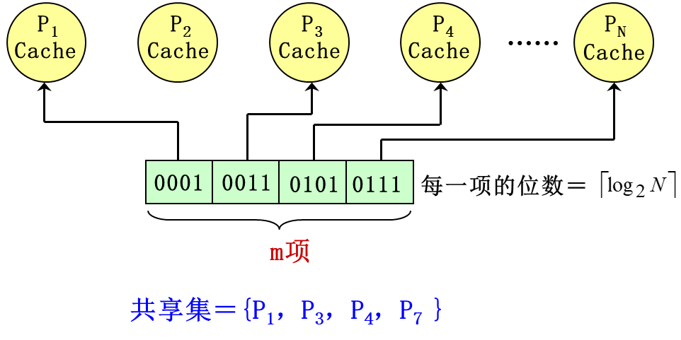
如图，有限映像目录（m＝4，N≥8的情况）
链式目录
用一个目录指针链表来表示共享集合。当一个数据块的副本数增加（或减少）时，其指针链表就跟着变长（或变短）
由于链表的长度不受限制，因而带来了以下优点：既不限制副本的个数，又保持了可扩展性
两种实现方法：
单链法：
当Cache中的块被替换出去时，需要对相应的链表进行操作——把相应的链表元素（假设是链表中的第i个）删除。实现方法有以下两种：
沿着链表往下寻找第i个元素，找到后，修改其前后的链接指针，跳过该元素。
找到第i个元素后，作废它及其后的所有元素所对应的Cache副本。

2. **双链法**：
在替换时不需要遍历整个链表。
节省了处理时间，但其指针增加了一倍，而且一致性协议也更复杂了